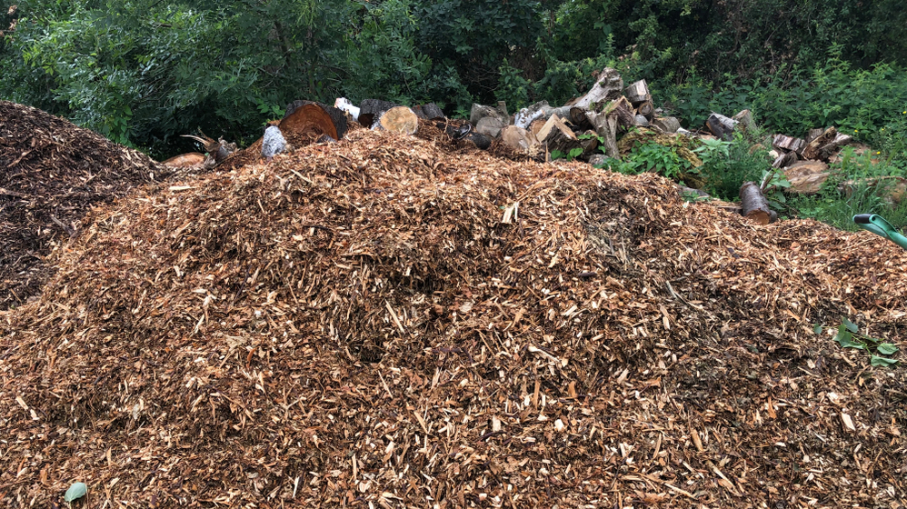

The impact of driving four carbon-emitting buses for two hours to pick up sticks and spread wood chips
5/3/22 8:30AM

TORONTO, ONTARIO —
Concerns about climate change are growing. There is an excessive amount of Carbon Dioxide in our atmosphere causing global warming, which has devastating consequences for our planet. Climate change is arguably the biggest threat facing humanity, and our world is spiraling out of control. As climate change becomes one of the most pressing issues in our world, the next generation has to do something about it.
For one week of the year(Earth Week), people from around the world focus on green living and confronting the climate crisis. During Earth Week, a school held an event for all the grade 8 students. The school sent their grade 8 students on a one-hour trip to Norval in four full diesel-powered school buses. At Norval, the students gathered sticks and spread wood chip piles. They were able to move some sticks away from the path so that people wouldn’t trip, and they also moved wood chip piles into muddy areas, to prevent people from getting their clothes muddy. In the future, we may be able to stop the detrimental effects of climate change if more people continue to pick up sticks and spread wood chip piles. Furthermore, taking four thirty-thousand-pound school buses to Norval to pick up sticks and spread wood chips taught the students some new, incredibly useful skills that they wouldn’t have learned in school. It is so inspiring to see the next generation help the environment. Although it took a long time to ride four buses – each producing tonnes of carbon dioxide helping to contribute to the irreversible amount of carbon dioxide emitted in our world – the students learned how crucial picking up sticks and spreading wood chips were to saving the planet. So many students felt inspired to pick up more sticks and spread more wood chip piles so that in the future they can continue to do so and can finally help to counteract climate change.
We asked one of the students to share their experience picking up sticks and spreading wood chip piles. They said “Well, it was an incredible experience, and I’m so glad that the school organized this event that had such an amazing impact. I want to do this more often to help fight climate change.” We can see that the students think this cleanup really helped the environment.
Well, after reading about this, we can be assured that the fate of our planet is in good hands. With a greater number of people working together to pick up sticks and spread wood chip piles while driving around emitting carbon dioxide, we may finally be able to reverse the effects of climate change and save our planet.